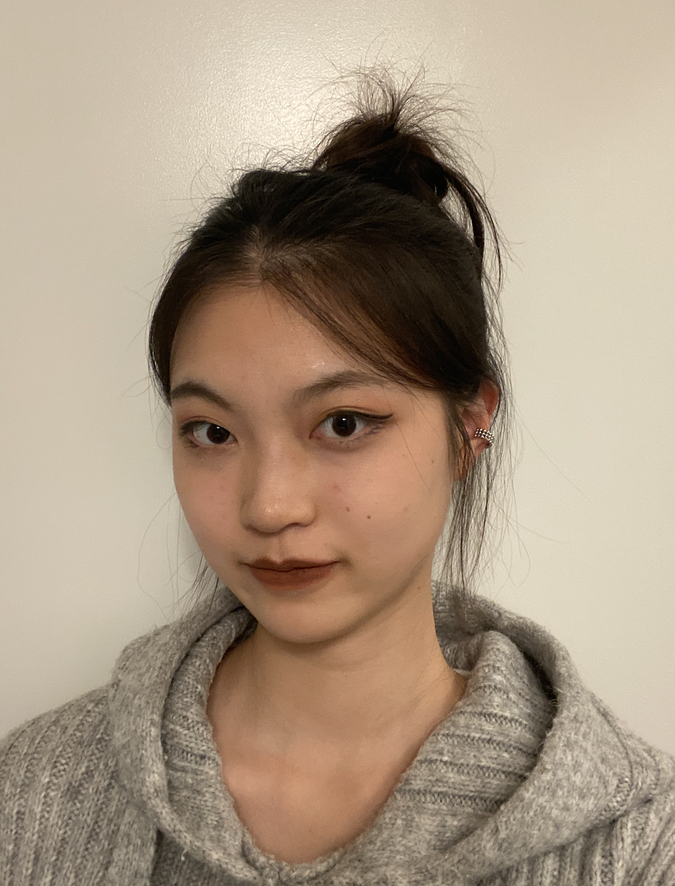
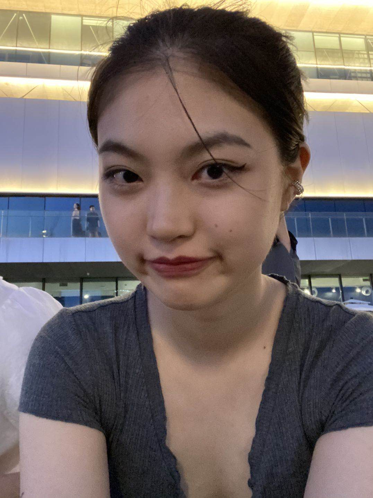
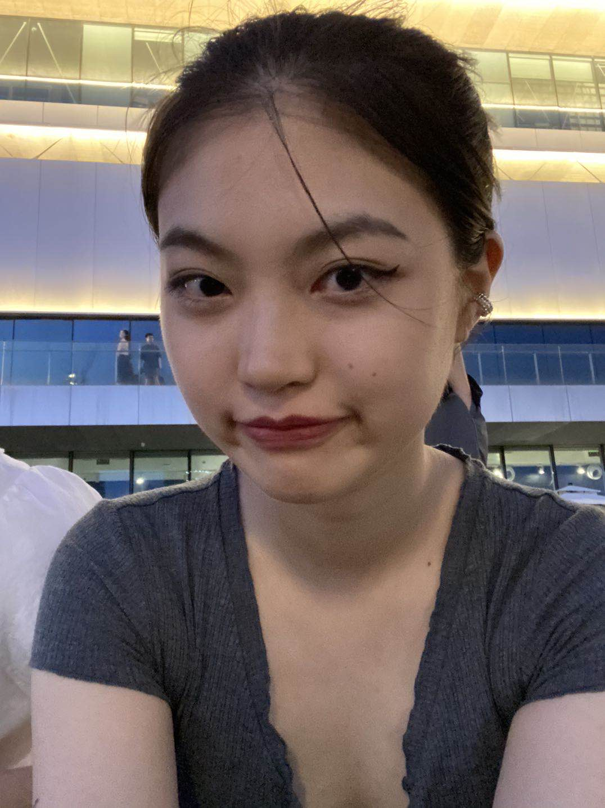

I am a UX designer, passionate about creating invisible, humanistic, and interesting digital experiences. Currently, I am a graduate student @ UMich, studying HCI and UX design. I worked with Midea, Grindr, and HomeDepot. And I am a research assistant at the ORBIT Lab.
 

Here are some facts about me: 1.I regard myself as a problem solver, a solution optimizer, and a challenge lover who uses design and technology as vehicles. 2.I believe "by making something useful, empowering and beautiful, we express our love for humanity" (Jony, 2021). 3.I like beavers, backpacking, surfing, and ballroom dancing. In 2022, I am learning how to produce electronic music. 4.The logo of this website is my name in Chinese.My previous jobs include Associate Professor at Please check my Linkedin